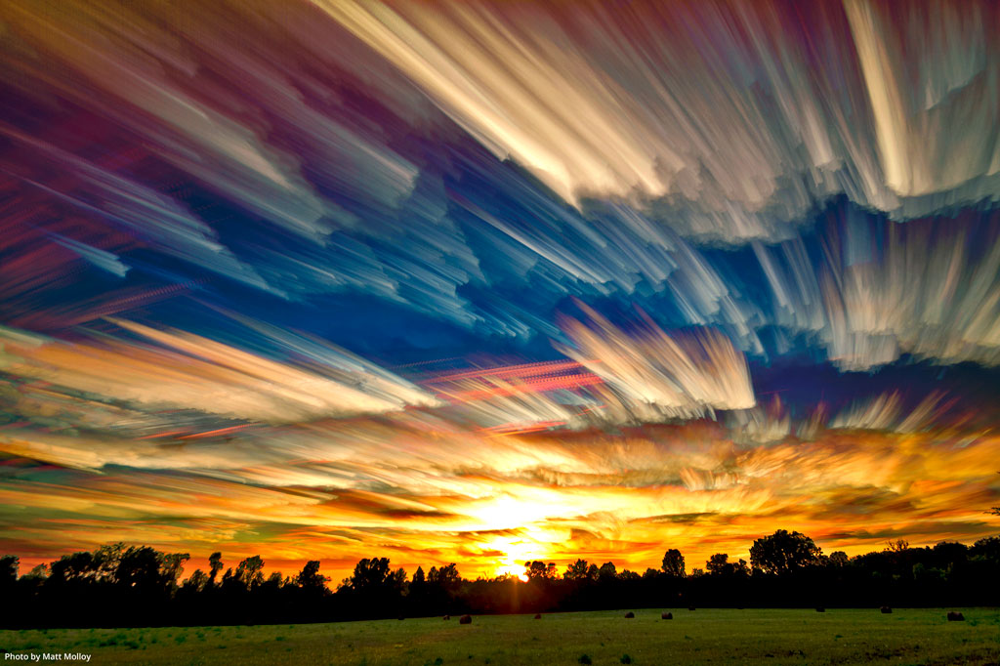

TRAVEL THROUGH SPACE AND TIME >>>>>>>>>>>>>
WHAT IS TIME?
- The indefinite continued progress of existence and events in the past, present, and future regarded as a whole.
- The measured or measurable period during which an action, process, or condition exists or continues

Time lapse Image of clouds